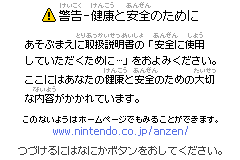
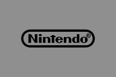

bit Generations - Boundish (Japan) (En)
SRAM 256K gbakit Built-In VRAM Tile Sheet 💾 MultiBoot 🎮 4P Link 📡 Wireless
Cartridge Identity
- Game Code
BVDJ(FamilyBVD)- Header Title
BOUNDISH- Maker / Revision
01/ rev0- ROM Size
- 16.0 MiB (16,777,216 B)
- Save Media
SRAM 256K- SHA-256
f37ee29693a3c4dafe9afd7624c19dbe0fc042371f3ed17b0b7ab1aeb70295b8- Engine / SDK Group
comm-091(2 families)
Screenshots


Niche & Rare Accessories
Detected niche/rare GBA accessory support: 🔌 Wireless Adapter (RFU_V1026).
Full 343-ROM corpus breakdown in the Cartridge Hardware & Niche Accessories Reference · auto-detected from ROM bytes via
gbakit inspect.
- Wireless Adapter (RFU_V1026)
- Nintendo Wireless Adapter (
AGB-015) SDKRFU_V1026+RFU-MBOOT
Link Cable & Multiplayer Communications
This title contains detected communication capabilities: 💾 MultiBoot 🎮 4P Link 📡 Wireless.
Detailed protocol specifications, SIO registers, Joybus commands, and MultiBoot sequences are documented in the Link & Multiplayer Reference.
- Multi-Player SIO (4P)
- 16-bit ring network · SIOCNT (
0x04000128) literals:0x0320c4,0x032f98,0x032fc4· SIODATA32/SIOMULTI0 (0x04000120) literals:0x0320b8,0x03217c,0x035c00 - Nintendo Wireless Adapter
- AGB-015 RFU driver signature
RFU-MBOOTat offset0x0449f8 - Nintendo Wireless Adapter
- AGB-015 RFU driver signature
RFU-MBOOTat offset0x071508 - Nintendo Wireless Adapter
- AGB-015 RFU driver signature
RFU-MBOOTat offset0x07d6f0 - Nintendo Wireless Adapter
- AGB-015 RFU driver signature
NINTENDOSio32IDat offset0x071514 - Nintendo Wireless Adapter
- AGB-015 RFU driver signature
NINTENDOSio32IDat offset0x0a9c54 - Nintendo Wireless Adapter
- AGB-015 RFU driver signature
NINTENDOSio32IDat offset0x0ebb20 - Single-Cart MultiBoot
- Single-Cartridge MultiBoot (Download Play) client/server handler · SDK signatures:
MBOOTat0x0449fc
Battery Save Support in gbakit
Built-in definition (BVDJ)
gbakit save verify BVDJ save.sav
gbakit save decode BVDJ save.sav
gbakit save fix BVDJ damaged.sav -o repaired.savROM Assets, Compression & Audio
- BIOS Compression
- LZ77 (
0x10): 0 streams · RLE (0x30): 0 streams - ROM Pointer Tables
- 10 tables (0 pointing to validated compressed streams)
- SDK Backup Tags
SRAM_V113,SRAM_V113,SRAM_V113,SRAM_V113- VRAM / Palette Snapshot
- 676 non-zero 8×8 tiles · 1 palettes · Direct ROM matches: 63 VRAM blocks, 0 palette blocks

Text, Fonts & Scene Data
- Primary Text Encoding
- Compressed / custom-encoded text (
8ASCII strings) - Font & VWF Indicators
- VWF Width Table 1bpp Font · BIOS SWIs: BitUnPack
0x10:2· LZ770x11/12:0· Huffman0x13:4· RLE0x14/15:0 - Scene & Packaging
7ROM pointer tables (≥32 entries,2≥200) ·0relativeu32TOCs ·26OAM metasprite hits
Hardware MMIO Subsystems
ppu_display0x802738c,0x8029ed0,0x8029f54save_bus_sram_flash0x8027758